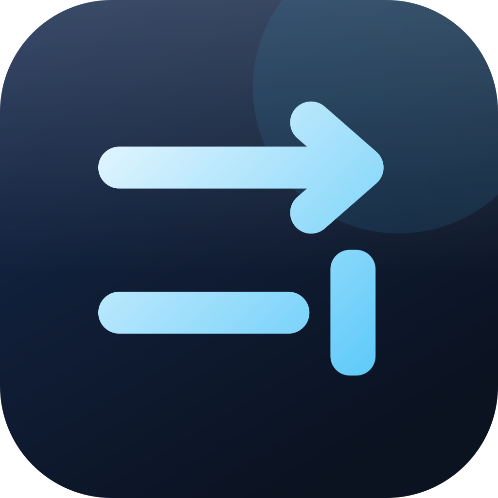

Right after the admin password prompt, the app opens one window that asks the question with room to answer it: the app icon, a large title, a searchable list of all 37 services with checkboxes, and a field for a site. Continue applies what was ticked; Set Up Later closes the window and leaves a one-line hint in the dropdown with a Set Up… button that reopens it. Trade-off: the clearest guided start, with every service in reach and nothing crammed into the dropdown, but a window on first launch is the most interrupting option, it is a new window to build and keep in step with the Services page, and the dropdown still needs its own empty state for anyone who skips.
